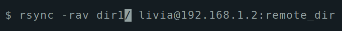

Posted on November 27, 2020 - 2 minute read
RSync Basic Commands
rsync (remote sync) is an open source utility used for synchronizing files and directories between two different systems, providing fast incremental file transfer. It is a great tool to perform backups.
Basic usage
To sync the contents of source directory(dir1) to a destination directory(dir2) on the same system:
rsync -a dir1/ dir2
To sync the contents of a local directory(dir1) to a remote directory(dir2):
rsync -a dir1/ username@remote_host:dir2
To sync the contents of a local directory(dir1) to a remote directory(dir2), when using a SSH identity file (private key) for public key authentication:
rsync -e "ssh -i keypair.pem" -a dir1/ username@remote_host:dir2
Verbose (–verbose, -v)
By default, rsync works silently. This option allows you to see what’s happening during the transfer, even if no files are transfered.
rsync -v dir1/ dir2
$ rsync -v dir1/ livia@192.168.1.2:remote_dir
livia@192.168.1.2's password:
skipping directory .
sent 16 bytes received 12 bytes 6.22 bytes/sec
total size is 0 speedup is 0.00
$
Archive (–archive, -a)
It is a quick way of saying you want to preserve almost everything.
rsync -a dir1/ dir2
$ rsync -av dir1/ livia@192.168.1.2:remote_dir
sending incremental file list
./
file1
file2
file3
sent 2,183 bytes received 589 bytes 792.00 bytes/sec
total size is 498 speedup is 0.18
$
Recursive (–recursive, -r)
This tells rsync to copy directories recursively.
rsync -r dir1/ dir2
$ rsync -rav dir1/ livia@192.168.1.2:remote_dir
sending incremental file list
subdir1/
subdir1/subfile1
subdir1/subfile2
subdir1/subfile3
sent 391 bytes received 77 bytes 133.71 bytes/sec
total size is 83 speedup is 0.18
$
DISCLAIMER: Noticed that there is a trailing slash (/) at the end of the first argument in dir1/

This is necessary to mean “the contents of dir1”. The alternative, without the trailing slash, would place dir1, including the directory, within dir2. This would create a hierarchy that looks like:
~/dir2/dir1/[files]
Compare this output with the trailing slash:
$ rsync -rav dir1/ livia@192.168.1.2:remote_dir
sending incremental file list
./
file1
file2
file3
subdir1/
subdir1/subfile1
subdir1/subfile2
subdir1/subfile3
sent 534 bytes received 145 bytes 194.00 bytes/sec
total size is 83 speedup is 0.12
$ tree remote_dir/
remote_dir/
├── file1
├── file2
├── file3
└── subdir1
├── subfile1
├── subfile2
└── subfile3
1 directory, 6 files
livia@antix1:~
$
And when we remove the trailing slash:
$ rsync -rav dir1 livia@192.168.1.2:remote_dir
sending incremental file list
dir1/
dir1/file1
dir1/file2
dir1/file3
dir1/subdir1/
dir1/subdir1/subfile1
dir1/subdir1/subfile2
dir1/subdir1/subfile3
sent 850 bytes received 260 bytes 246.67 bytes/sec
total size is 83 speedup is 0.07
$ tree remote_dir/
remote_dir/
└── dir1
├── file1
├── file2
├── file3
└── subdir1
├── subfile1
├── subfile2
└── subfile3
2 directories, 6 files
livia@antix1:~
$
You can see here that the directory itself is transferred.
Update (–update, -u)
This forces rsync to skip any files which exist on the destination and have a modified time that is newer than the source file.
rsync -u dir1/ dir2
Notice how the size and modified date changes from 83 Nov 26 16:56 file1 to 677 Nov 27 14:10 file1.
$ ls -lh remote_dir/
total 8.0K
-rw-rw-r-- 1 livia livia 83 Nov 26 16:56 file1
-rw-rw-r-- 1 livia livia 0 Nov 26 15:58 file2
-rw-rw-r-- 1 livia livia 0 Nov 26 15:58 file3
drwxrwxr-x 2 livia livia 4.0K Nov 27 13:42 subdir1
$ rsync -rauv dir1/ livia@192.168.1.2:remote_dir
livia@192.168.1.2's password:
sending incremental file list
./
file1
sent 934 bytes received 45 bytes 217.56 bytes/sec
total size is 677 speedup is 0.69
$ ls -lh remote_dir/
total 8.0K
-rw-rw-r-- 1 livia livia 677 Nov 27 14:10 file1
-rw-rw-r-- 1 livia livia 0 Nov 26 15:58 file2
-rw-rw-r-- 1 livia livia 0 Nov 26 15:58 file3
drwxrwxr-x 2 livia livia 4.0K Nov 27 13:42 subdir1
$
Dry Run (–dry-run, -n)
This makes rsync perform a trial run that doesn’t make any changes (and produces mostly the same output as a real run). Good resource to test the parameters before doing a big transfer.
rsync -n dir1/ dir2
$ rsync -rauvn dir1/ livia@192.168.1.2:remote_dir
sending incremental file list
./
file1
file2
file3
subdir1/
subdir1/subfile1
subdir1/subfile2
subdir1/subfile3
sent 235 bytes received 41 bytes 78.86 bytes/sec
total size is 677 speedup is 2.45 (DRY RUN)
$ tree remote_dir/
remote_dir/
0 directories, 0 files
livia@antix1:~
$
Progress (–progress, -P)
This option tells rsync to print information showing the progress of the transfer.
rsync -P dir1/ dir2
$ rsync -rauvP dir1/ livia@192.168.1.2:remote_dir
sending incremental file list
./
big-file
67,562,098 100% 1.16MB/s 0:00:55 (xfr#1, to-chk=7/9)
sent 67,562,098 bytes received 100 bytes 945,162.08 bytes/sec
total size is 67,562,198 speedup is 1.00
$
More about rsync can be found at the manual page.